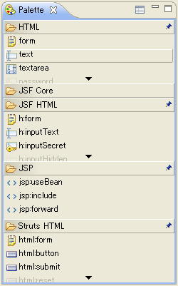
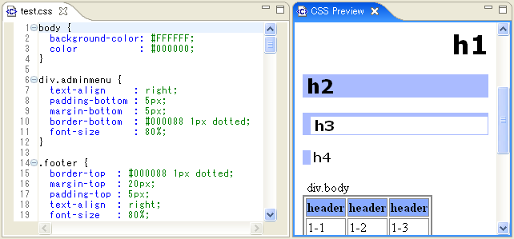

EclipseHTMLEditor provides following views:
You can open these views Show View dialog (accessed via the menubar: Window/Show View/Other...)
Provides HTML / JSP tags. Clicking on a palette item inserts the corresponding tag into the active code editor, if applicable. You can also customize a palette to add new taglibs or your own templates from [image] icon.

If StrutsIDE or FacesIDE has been installed, Struts / JSF tags would be added to the palette.
Displays a preview of images in the folder currently selected in the Package Explorer. As shown at right, this view has 2 parts--a list of images, and a preview of the selected image.
Provides CSS preview when the CSS editor is active. This view displays HTML that applied CSS.HTML contents are generated by CSS dynamically.
